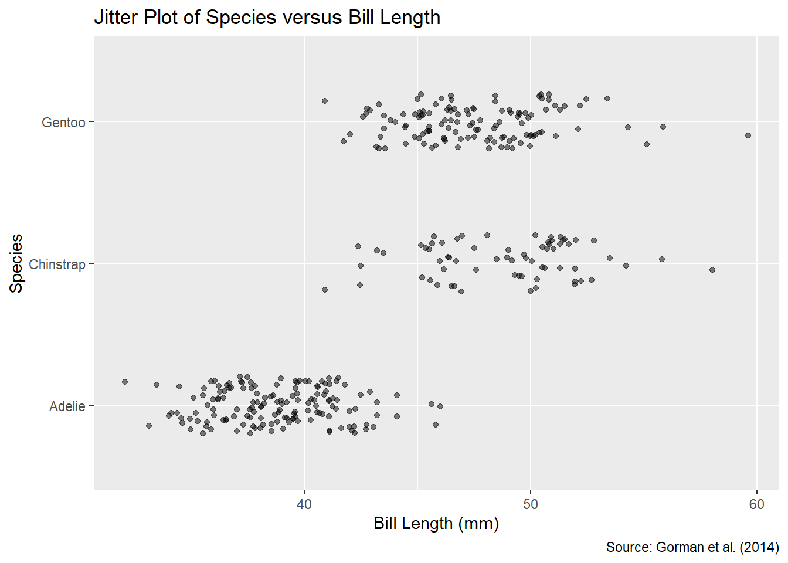
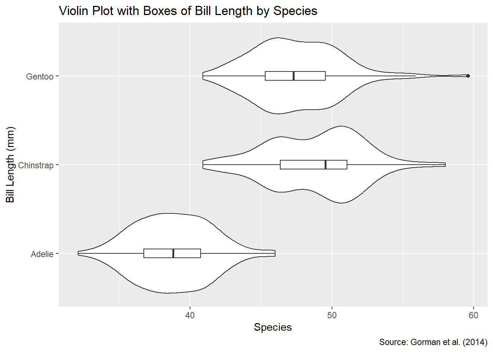
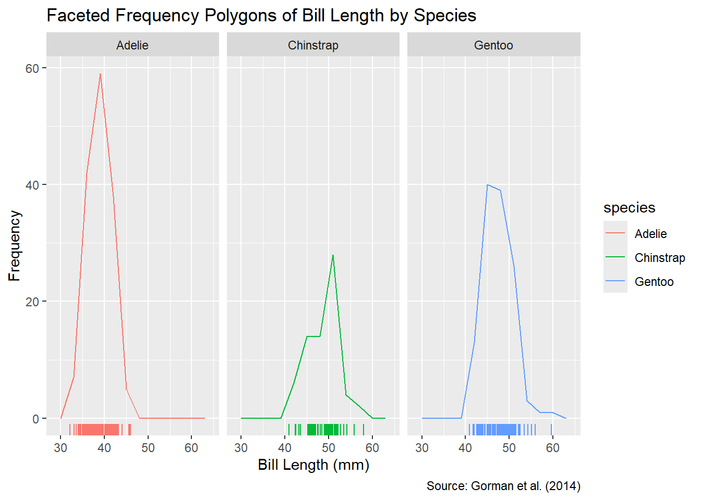
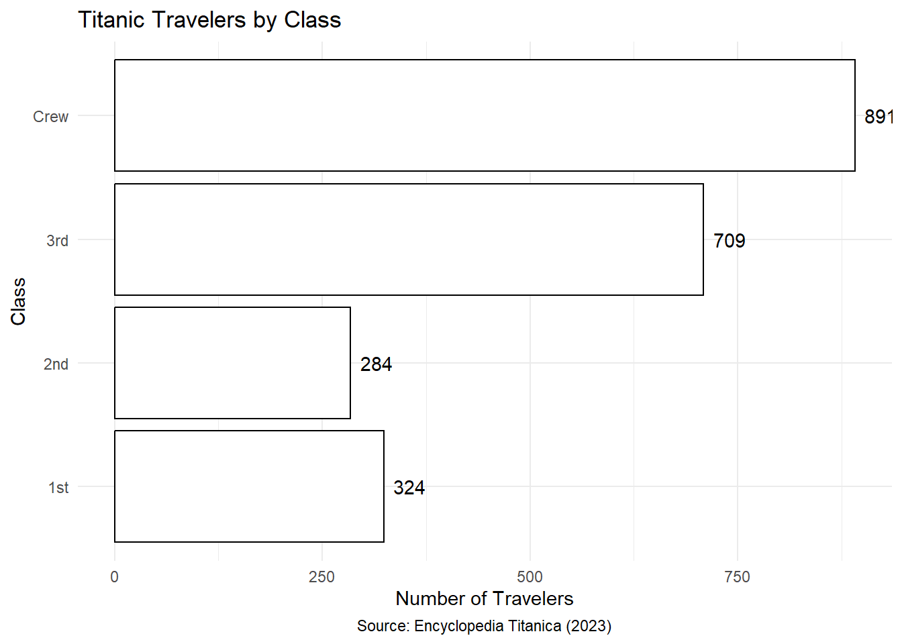

library(tidyverse)
library(palmerpenguins)
library(ggbeeswarm)
library(ggmosaic)
library(dplyr)Visualizing Greenhouse Gas Emissions in the world
Data Preparation done by Team Bisque
1 Introduction
In this exercise, you will delve into the world of data visualization using ggplot2. The assignment is divided into two parts, each focusing on a different data set and exploring various visualization techniques.
In Chapter 2, you will work with the Palmer penguins data set, which contains information about three species of penguins: Adélie, Chinstrap, and Gentoo (Figure 1.1). Your task is to create visualizations of the penguins’ bill lengths that will highlight differences between the species.
The Palmer penguins data set contains information about three species of penguins: Adélie, Chinstrap, and Gentoo. Artwork by Horst (2020). In Chapter 3, you will explore the tragic history of the Titanic and examine data about its passengers and crew. Our goal is to analyze whether travelers in different classes had a different chance of survival. This exercise will showcase the power of visualization in uncovering patterns and insights within categorical data.
The primary learning objectives of this exercise include developing proficiency in using ggplot2 and fostering critical thinking skills to evaluate the relative advantages and disadvantages of different visualization techniques. By the end of this exercise, you should be able to make informed decisions about the most appropriate visualization technique for various types of data that you may encounter in the future.
2 Visualizing the Distribution of Quantitative Data: Bill Lengths of Pygoscelis Penguins
Pygoscelis penguins, also known as brush-tailed penguins, are a genus found in the Antarctic and subantarctic regions. They are characterized by their black and white plumage and a unique swimming technique called porpoising, where they leap out of the water in a series of rapid jumps to breathe air. This genus includes three species: the Adélie penguin (Pygoscelis adeliae), the gentoo penguin (Pygoscelis papua), and the chinstrap penguin (Pygoscelis antarcticus). Researchers at Palmer Station in Antarctica have collected data on the bill length of these penguins (Gorman, Williams and Fraser, 2014). You will use these data, available from the palmerpenguins package, to explore the differences between the species using various plot types.
2.1 Remove Missing Values
Remove the penguins with missing bill length measurements from the penguins tibble to avoid ggplot2 warning messages in subsequent tasks.
penguins <- penguins |>
drop_na("bill_length_mm")
head(penguins)# A tibble: 6 × 8
species island bill_length_mm bill_depth_mm flipper_length_mm body_mass_g
<fct> <fct> <dbl> <dbl> <int> <int>
1 Adelie Torgersen 39.1 18.7 181 3750
2 Adelie Torgersen 39.5 17.4 186 3800
3 Adelie Torgersen 40.3 18 195 3250
4 Adelie Torgersen 36.7 19.3 193 3450
5 Adelie Torgersen 39.3 20.6 190 3650
6 Adelie Torgersen 38.9 17.8 181 3625
# ℹ 2 more variables: sex <fct>, year <int>2.2 Scatter Plot of Species versus Bill Length
Create a scatter plot displaying bill length on the x-axis and species on the y-axis. For this task and all subsequent ones, customize the axis labels and add a plot title. Additionally, include a plot caption attributing the source as “Gorman et al. (2014)”.
p <- ggplot(penguins, aes(x = bill_length_mm, y = species)) +
geom_point() +
labs(
x = "Bill Length (mm)",
y = "Species",
title = "Scatter Plot of Species versus Bill Length",
caption = "Source: Gorman et al. (2014)"
)
p2.3 Why Should You Jitter the Plot?
Which feature of the data suggests that jittering the scatter plot might be beneficial? (Hint: Show that individuals cannot be uniquely identified by their bill length and species.)
Answer: Jittering helps to spread out the points along the y-axis, making it easier to distinguish between the different species. This is particularly useful when the data points are overlapping, as it allows us to visualize the distribution of bill lengths for each species more clearly.
2.4 Jitter Plot
Create a jitter plot displaying bill length on the x-axis and species on the y-axis. Reduce the opacity of the points and adjust the width and height arguments so that points are only jittered in the y-direction while ensuring that the points for different species are clearly separated.
p_jitter <- ggplot(penguins, aes(x = bill_length_mm, y = species)) +
geom_point(position = position_jitter(height = 0.2), alpha = 0.5) +
labs(
x = "Bill Length (mm)",
y = "Species",
title = "Jitter Plot of Species versus Bill Length",
caption = "Source: Gorman et al. (2014)"
)
p_jitter
2.5 Bee-Swarm Plot
Use the geom_beeswarm() function from the ggbeeswarm package to produce a bee-swarm plot illustrating the distribution of bill lengths for each species. Display bill length on the x-axis and species on the y-axis.
p_beeswarm <- ggplot(penguins, aes(x = bill_length_mm, y = species)) +
geom_beeswarm() +
labs(
x = "Bill Length (mm)",
y = "Species",
title = "Bee-Swarm Plot of Species versus Bill Length",
caption = "Source: Gorman et al. (2014)"
)
p_beeswarm2.6 Pros and Cons of Bee-Swarm Plots
State one advantage and one disadvantage of using a bee-swarm plot rather than a jitter plot for these data?
Advantage: Bee-swarm plots provide a more compact visualization of the data compared to jitter plots, making it easier to identify the distribution of bill lengths for each species.
Disadvantage: Bee-swarm plots may become cluttered when there are many data points, potentially obscuring the underlying patterns in the data.
2.7 Violin Plot with Boxes
Combine a violin plot and a box plot in one graph. The plot should display bill length on the x-axis and species on the y-axis.
p_violin <- ggplot(penguins, aes(x = bill_length_mm, y = species)) +
geom_violin() +
geom_boxplot(width = 0.1, fill = "white") +
labs(
x = "Species",
y = "Bill Length (mm)",
title = "Violin Plot with Boxes of Bill Length by Species",
caption = "Source: Gorman et al. (2014)"
)
p_violin
2.8 Frequency Polygons with Rug Plot
Display the bill-length distribution of each species as a frequency polygon, using a bin width of your choice. Combine all three frequency polygons into one coordinate system using a color aesthetic. Place a rug plot below the x-axis to show the distribution of individual data points with corresponding colors.
p_freq_polygons <- ggplot(penguins, aes(x = bill_length_mm, color = species)) +
geom_freqpoly(binwidth = 3) +
geom_rug() +
labs(
x = "Bill Length (mm)",
y = "Frequency",
title = "Frequency Polygons of Bill Length by Species",
caption = "Source: Gorman et al. (2014)"
)
p_freq_polygons2.9 Faceted Frequency Polygons with Rug Plots
Produce a faceted plot that displays the bill-length distribution of each species in a separate facet, using the same bin width as in the previous task. Add a rug plot below each frequency polygon.
p_faceted_freq_polygons <- ggplot(penguins, aes(x = bill_length_mm, color = species)) +
geom_freqpoly(binwidth = 3) +
geom_rug() +
facet_wrap(~species) +
labs(
x = "Bill Length (mm)",
y = "Frequency",
title = "Faceted Frequency Polygons of Bill Length by Species",
caption = "Source: Gorman et al. (2014)"
)
p_faceted_freq_polygons
2.10 Pros and Cons of Faceting
State one strength and one weakness of the faceted plot in the previous task compared to the earlier non-faceted frequency polygons with rug plot.
Strength: Faceting allows us to compare the bill-length distribution of each species more easily by displaying them in separate panels. This makes it simpler to identify differences between the species.
Weakness: Faceting may lead to visual clutter when there are many facets, making it challenging to interpret the data. It can also be less effective in highlighting patterns that are consistent across different facets.
2.11 Unmarked Bonus Question: Pairwise t-Test
All plots above suggest that the bill length of the Adélie penguin is shorter than that of the gentoo and chinstrap penguins. Let us support this observation quantitatively:
- Calculate the mean bill length for each species.
- Perform a pairwise t-test using R. Report the p-value and interpret the result using a significance level of 0.05.
# Calculate the mean bill length for each species
mean_bill_length <- penguins %>%
group_by(species) %>%
summarize(mean_bill_length = mean(bill_length_mm, na.rm = TRUE))
print(mean_bill_length)# A tibble: 3 × 2
species mean_bill_length
<fct> <dbl>
1 Adelie 38.8
2 Chinstrap 48.8
3 Gentoo 47.5# Perform a pairwise t-test
pairwise_t_test_results <- pairwise.t.test(penguins$bill_length_mm, penguins$species, p.adjust.method = "none")
# Extract p-values for comparisons involving Adélie penguins
pairwise_t_test_results$p.value Adelie Chinstrap
Chinstrap 4.232862e-72 NA
Gentoo 5.330682e-76 0.003178539# Interpret the result
# The p-values for the pairwise t-tests comparing the bill length of Adélie penguins with that of gentoo and chinstrap penguins are both less than 0.05. Therefore, we reject the null hypothesis that the mean bill length of Adélie penguins is equal to that of gentoo and chinstrap penguins. This result supports the observation that the bill length of Adélie penguins is shorter than that of the other two species.3 Visualizing the Distribution of Categorical Data: Travelers on the Titanic
The spreadsheet at titanic.csv, available from Prof. Gastner’s website, contains information about the passengers and crew aboard the Titanic during its maiden voyage in 1912, which tragically ended when the ship hit an iceberg and sank. This spreadsheet is based on data available from the Encyclopedia Titanica (Hind, 2023).
titanic <- read_csv("titanic.csv")Rows: 2208 Columns: 14
── Column specification ────────────────────────────────────────────────────────
Delimiter: ","
chr (9): fam_name, given_name, class, sex, ticket, embarkation_port, profess...
dbl (3): id, age, recovered_body
lgl (2): survived, certain_on_lifeboat
ℹ Use `spec()` to retrieve the full column specification for this data.
ℹ Specify the column types or set `show_col_types = FALSE` to quiet this message.head(titanic)# A tibble: 6 × 14
id fam_name given_name age class sex survived ticket embarkation_port
<dbl> <chr> <chr> <dbl> <chr> <chr> <lgl> <chr> <chr>
1 1 Abbing Anthony 41 3rd Male FALSE 5547 Southampton
2 2 Abbott Ernest Owen 21 Crew Male FALSE <NA> Southampton
3 3 Abbott Eugene Jose… 13 3rd Male FALSE CA2673 Southampton
4 4 Abbott Rhoda Mary … 39 3rd Fema… TRUE CA2673 Southampton
5 5 Abbott Rossmore Ed… 16 3rd Male FALSE CA2673 Southampton
6 6 Abelseth Kalle (Kare… 16 3rd Fema… TRUE 348125 Southampton
# ℹ 5 more variables: profession <chr>, job_on_board <chr>, lifeboat <chr>,
# certain_on_lifeboat <lgl>, recovered_body <dbl>3.1 Bar Chart of Travelers by Class
Create a bar chart displaying the number of travelers by class (1st, 2nd, 3rd, and crew). Include a plot title and a caption attributing the source as “Encyclopedia Titanica (2023).” Aim for a solution similar to Figure 3.1.
Hint: You may find it easier to aggregate the number of passenger using count() before calling ggplot().
titanic_class <- titanic |>
count(class) |>
mutate(class = factor(class, levels = c("1st", "2nd", "3rd", "Crew")))
# Create the horizontal bar chart
ggplot(titanic_class, aes(x = class, y = n)) +
geom_bar(stat = "identity", fill = "white", color = "black") +
geom_text(aes(label = n), hjust = -0.3, color = "black") +
coord_flip() +
labs(title = "Titanic Travelers by Class",
x = "Class",
y = "Number of Travelers",
caption = "Source: Encyclopedia Titanica (2023)") +
theme_minimal() +
theme(plot.caption = element_text(hjust = 0.5))
3.2 Dodged Bar Chart of Travelers by Class and Survival
Use a dodged bar chart to visualize the dependence of the survival rate on the class in which a person traveled. Aim for a solution similar to Figure 3.2.
# Aggregate the number of passengers by class and survival status
travelers_by_class_survival <- titanic |>
count(class, survived)
# Reorder the class factor levels to ensure Crew is at the top and 1st class is at the bottom
travelers_by_class_survival$class <- factor(travelers_by_class_survival$class, levels = c("1st", "2nd", "3rd", "Crew"))
# Create the dodged bar chart
ggplot(travelers_by_class_survival, aes(x = class, y = n, fill = survived)) +
geom_bar(stat = "identity", position = "dodge", color = "white") +
geom_text(aes(label = n, color= survived), position = position_dodge(width = 0.8), hjust = -0.3, show.legend = FALSE) +
coord_flip() +
labs(title = "Titanic Travelers by Class and Survival",
x = "Class",
y = "Number of Travelers",
fill = "Survived",
caption = "Source: Encyclopedia Titanica (2023)") +
theme_minimal() +
scale_fill_manual(values = c("TRUE" = "turquoise", "FALSE" = "coral")) +
scale_color_manual(values = c("TRUE" = "turquoise", "FALSE" = "coral"))3.3 Mosaic Plot
When working with two categorical variables, such as class and survival, mosaic plots provide an alternative to segmented bar charts. Use the geom_mosaic() function from the ggmosaic package to create a mosaic plot of the data in titanic. Aim for a solution similar to Figure 3.3.
This task requires some hacking skills. Look at the documentation for geom_mosaic(). A hint for printing the number of travelers in each category at the center of the corresponding mosaic tile can be found on Stack Overflow.
# Create the mosaic plot
p <- ggplot(data = titanic) +
geom_mosaic(aes(x = product(class), fill = survived))
# Extract the data for text labels
label_data <- ggplot_build(p)$data[[1]] |>
group_by(x__class, xmin, xmax, ymin, ymax) |>
summarise(total = sum(.wt), .groups = 'drop')Warning: The `scale_name` argument of `continuous_scale()` is deprecated as of ggplot2
3.5.0.Warning: The `trans` argument of `continuous_scale()` is deprecated as of ggplot2 3.5.0.
ℹ Please use the `transform` argument instead.Warning: `unite_()` was deprecated in tidyr 1.2.0.
ℹ Please use `unite()` instead.
ℹ The deprecated feature was likely used in the ggmosaic package.
Please report the issue at <https://github.com/haleyjeppson/ggmosaic>.# Add the text labels with total counts, ensuring only the total number is shown
p + geom_text(data = label_data,
aes(x = (xmin + xmax) / 2, y = (ymin + ymax) / 2, label = total),
size = 5, check_overlap = TRUE)3.4 Pros and Cons of Mosaic Plots
State one advantage and one disadvantage of using the mosaic plot in Figure 3.3 instead of the dodged bar chart in Figure 3.2 for the Titanic data.
Advantage: Mosaic plots provide a visual representation of the conditional distribution of one categorical variable within each category of another categorical variable, making it easier to compare the proportions of different groups.
Disadvantage: Mosaic plots can be challenging to interpret when the number of categories is large or when the categories are imbalanced, as the plot may become cluttered and difficult to read.